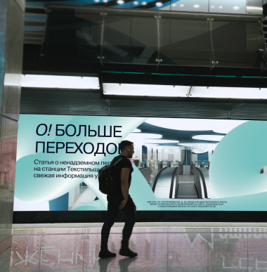
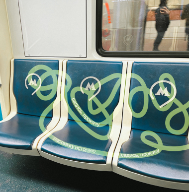
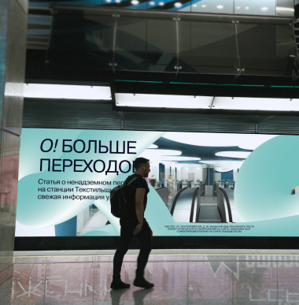
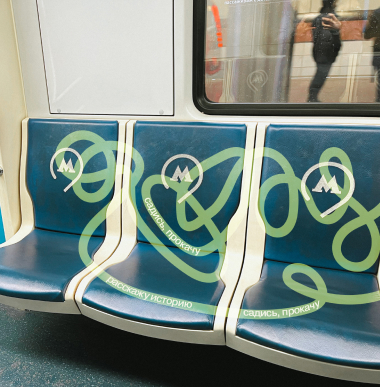
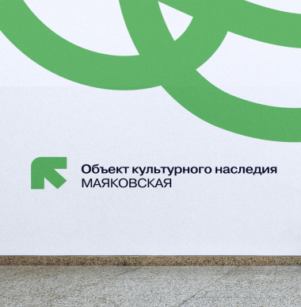
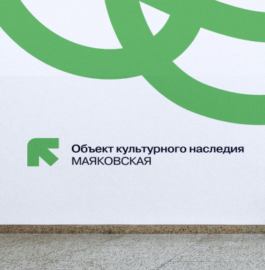

Стайлгайд
о! бренд
Мы используем линии метро в качестве визуального приема для раскрытия истории Московского метрополитена
миссия
Показать, что метро не только средство передвижения,
но и
сводка истории и архитектуры
ценности
Любовь к архитектуре и истории, ежедневные поездки —
это
интересное путешествие
tone of voice
Мы дружелюбны и приветливы. Описание материалов ярко и интересно, но не навязчиво, что позволяет легко усваивать информацию.
о! логотип
Полный
Сокращенный
Графический
семантика
«о!» - восклицание, которое отражает положительные эмоции, которые возникают у пользователей при появление новой интересной информации:удивление от уникальной архитектуры станций, восторг от исторических сводок Московского метро.
использование
Логотип используется в правом верхнем углу страницы или плаката.

ограничения
Цвет лого должен быть контрастен
на фоне и одного цвета.

так можно
так нельзя
Логотип должен быть одного начертания

так можно

так нельзя
о! цвета
В основе цвтеового решения лежит монохром, разбавленный двумя цветами: оранжевым, олицетворяющим старые веткии историю, и бирюзовым, отсылающим на БКЛ и все новое

о! типографика
Самое важное в нашем проекте - информация и удобство для чтения. Поэтому мы не используем акцентные шрифты, чтобы не отвлекать пользователя от визуального состовляющего

размеры
COFO +Pragmatica
header 4.4x
PRAGMATICA medium
header 2.2x
Pragmatica regular
header 2.2x
Pragmatica regular
body 1.3x
Pragmatica regular
body 1x
Pragmatica medium
annotation 0.8x
о! композиция

пример верстки 20 колонок
9/5/6

пример верстки 20 колонок
5/5/5/5
о! графика
Основной графический прием - запутанные ветки метро. Они используются в 3Д и 2Д формате
2д формат
Для материалов, связанных с прошлым. Преимущественно в оранжевом цвете
3д формат
Для оформления материалов, связанных с настоящим и будущим.
о! мерч
 



 



Галиева Эльвира
Атласова Нана